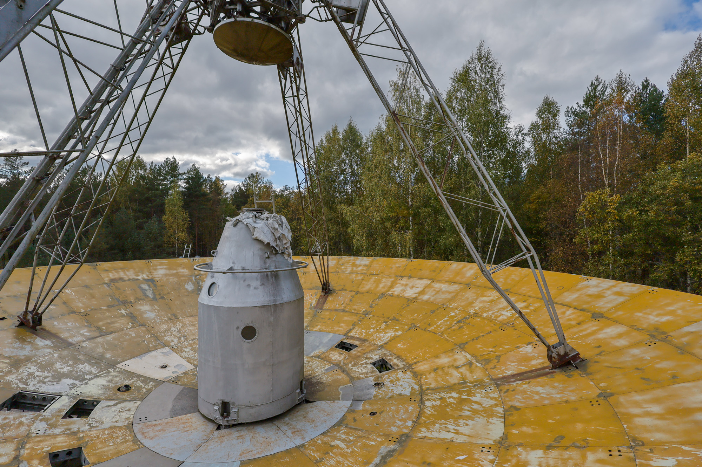

As my travels took me through Western Latvia, one of the places I was most excited about visiting drew near. I was so excited I couldn't pass up the opportunity to peer over the fence at it on my way past the night before. Rising above the treetops was a huge parabolic metal structure.
The Irbene complex was established by the Soviets in 1967 during their occupation of Latvia but only became publicly known in 1993, following Latvia’s independence and the Soviet withdrawal.
This site features three radio telescopes, the most prominent being the RT-32: a 32-meter (105 ft) rotating parabolic antenna, which is the eighth largest of its kind worldwide. Constructed by a naval factory in Ukraine, the RT-32’s interiors evoke the design of mid-20th-century ships.
Additional antennas on site include the RT-16 and RT-8, along with a modern Low-Frequency Array (LOFAR), which are much simpler and smaller.
Once known as the Space Intelligence Station ‘Zvaigznīte’ (Little Star), this facility used its radio telescopes to monitor everything from secret communications between Europe and the United States to Western Europe's radio broadcasts, including European soccer games.
As the Soviet Union fell and Latvia gained independence in 1991, departing Soviet troops were persuaded not to destroy the radio telescopes. They agreed on the condition that the equipment would only be used for research—not spying or warfare. However, they still inflicted damage by pouring acid on electric motors, literally throwing spanners into the gears of the dish positioning systems, and damaging control panels, leaving the radio telescopes unusable and in need of extensive repair.
When I arrived back at the Irbene site the following morning, I joined a small group for a tour of the facility. Over the following two hours, we explored the grounds and visited sites including the former RT-8 antenna building (now a museum), the old RT-16 dish, and finally, RT-32.
In the past decade, RT-16 was replaced with a new dish, allowing us to freely climb up the old dish and appreciate the sheer scale and impact of these metal structures. Rusting supports, sweeping curves, and gutted electrical equipment provided a glimpse into its former glory.

After a 600-meter walk through an access tunnel that once protected power and data cables, we arrived beneath the highlight of the site: RT-32. Approaching and standing under the dish was incredible, the structure a fascinating blend of new and old—modern dish on an aged frame with the rusting naval-style bulkheads.
While standing beneath the RT-32, it reposition itself a full 90 degrees, tilting down to just above our heads. It was unclear if this was staged for our tour or just a lucky glimpse at its regular operation, either way the perfectly balanced dish moved silently and with impressive speed. Watching something so massive move so quickly was slightly unsettling, a feeling I’d only experienced once before when standing near large railway cranes swiftly maneuvering shipping containers around like they were little Lego pieces.
Originally driven by Soviet-era paranoia and espionage, these metal giants now live on as part of the Ventspils International Radio Astronomy Centre (VIRAC). Today, they are operated by researchers and university students to further radio wave-based exploration of the universe. If you’re interested in visiting the Irbene radio telescopes, you can arrange a tour through this website: en.virac.eu/excursions.